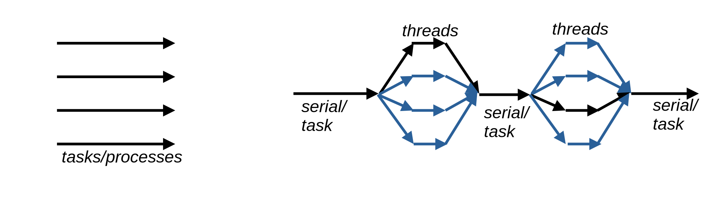
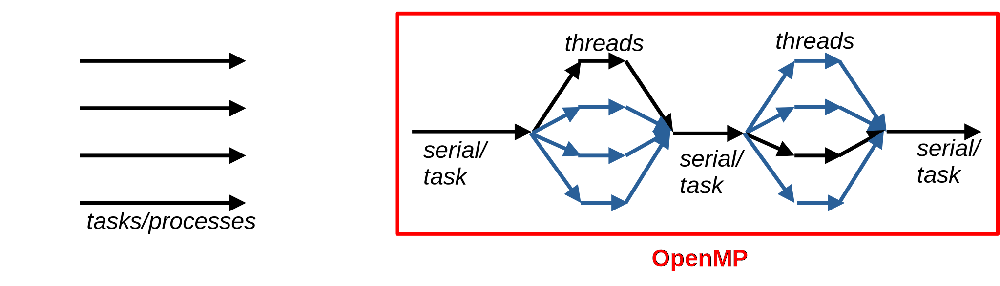

ESiWACE3-WarmWorld Summer School on HPC for Climate and Weather Applications
Two lectures + two exercise sessions; in Fortran
Shared memory computing using multithread parallellization with OpenMP
Understand the concept of multithreaded programming
Know how to build and run OpenMP programs
Learn to parallelize loop structures using threads
Identify the most common pitfalls and ways to rectify them


A library for multithreaded parallel programming on shared memory platforms
Implemented mainly as compiler directives (some library functions available) → Easy to maintain serial and parallel versions simultaneously within the same code base
Relatively easy to make quick and experimental implementations
export OMP_NUM_THREADS=4Fortran: !$omp parallel shared(data)
Notice that when OpenMP is enabled in Fortran, this line is Not a comment despite the exclamation mark!
USE omp_lib only needed for omp_get_thread_num()!$omp parallel / !$omp end parallel starts / ends a parallel regionprivate clause lists variables that are unique to each thread
Shared(list): listed variables seen by all threads - enable interaction
Private(list): listed variables unique for each thread
Firstprivate(list): listed variables private, but retain initial values set before parallel region
Default(Private/Shared/None): set the default sharing clause for variables not explicitly listed
Default(None) → must explicitly list all variables to some category
!$omp parallel do
or
!$omp parallel
!$omp do
!$omp parallel do
or
!$omp parallel
!$omp do
!$omp parallel do
or
!$omp parallel
!$omp do
xx(:) = ...
yy(:) = ...
glob = 0.
!$omp parallel do private(i) shared(xx,yy,glob,N)
DO i = 1,N
glob = glob + (xx(i) + yy(i))
END DO
!$omp end parallel doglob is read by and written to by all threads, well fix this next…xx(:) = ...
yy(:) = ...
glob = 0.
!$omp parallel do private(i) shared(xx,yy,glob,N)
DO i = 1,N
glob = glob + (xx(i) + yy(i))
END DO
!$omp end parallel doreduction(operator:list)
operator on listed variables at the end of parallel regionprivate within the parallel regionoperator across threads is returned after the parallel regionoperator: +, -, *, .and., .or., .eqv., .neqv., max, minomp barrier
do, parallelomp master
!$omp parallel executed only by the main threadomp single
master, but for arbitrary thread, including syncomp critical[(name)]
name to separate if there are multiple sectionsomp flush
barriersomp atomic
Original problem
critical construct: Final result combined from partial sums one thread at a timeMultithreaded programs execute a program on several CPU cores in a shared memory environment
OpenMP provides a compiler directive based API for thread based parallel programming
Includes a variety of data and work sharing constructs